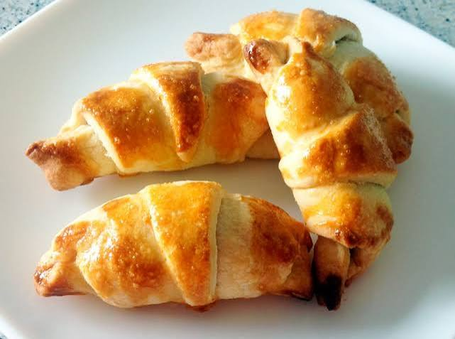

Croissants caseros

Los croissants son una de las preparaciones más emblemáticas de la repostería y la panadería. Su característica forma de media luna y su delicada textura los han convertido en una de las opciones favoritas para acompañar el café o el té. Aunque requieren un poco de paciencia, el resultado final merece el esfuerzo.